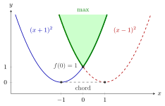

Operations Preserving Convexity of Functions¶
Proposition¶
Let be a convex set.
- Affine functions. For and , the function , , is convex and concave.
- Convex functions. Let be convex. Then
- is convex for every ;
- is convex;
- if is strictly convex, then is strictly convex;
- is convex.
- Concave functions. Let be concave. Then () and are concave, is strictly concave if is strictly concave, and is concave.
- Finitely many functions. Let with , and put
If every is convex, then is convex. If every is concave, then is concave.
Interpretation¶
These rules let you recognise a convex function from its building blocks instead of checking the defining inequality each time. Start from affine functions and simple convex ones such as or the norm, and combine them with nonnegative multiples, sums and maxima.

The figure uses the two convex functions of Example 3. Their maximum, drawn bold, equals and is convex; its epigraph, shaded and continuing upward, is the region above both parabolas, the intersection of their epigraphs. Their minimum is the lower envelope of the two curves: , but lies above the chord at height , so the minimum is not convex.
Each rule is a small argument with inequalities. The defining inequalities of and may be added, and multiplied by without changing direction; a negative reverses them, which is why is concave rather than convex. For the maximum, each lies below its own chord, and each chord lies below the chord of . In terms of the epigraph, is the intersection of the sets , and an intersection of convex sets is convex. For strictness, one strict inequality added to weak ones stays strict.
The rules come in pairs: maximum goes with convex, minimum with concave. Swapping them fails. The minimum of two convex functions can have two separate valleys (Example 3 below), and products are not covered at all (Example 4 below). The common misconception "convex operations on convex functions give convex functions" is therefore too broad: only the listed operations are safe.
For twice continuously differentiable functions Math IV's Hessian test is an alternative, but a maximum of affine functions has kinks where no Hessian exists, and there these rules are the natural tool. The same rules certify that the objective and constraint functions of a convex optimization problem are convex.
Key Results¶
- is convex and concave on , with equality in the defining inequality.
- For convex on a convex set and , the functions and are convex.
- If is strictly convex and is convex on , then is strictly convex.
- For concave and , the functions and are concave, and is strictly concave when is.
- The maximum of finitely many convex functions is convex and the minimum of finitely many concave functions is concave (proved by induction on ).
- Not preserved in general: the minimum of convex functions, the maximum of concave functions, products, and multiples with .
Examples¶
1. A family of strictly convex quadratics. For let on . Write with and . The function is strictly convex, by the same computation as for on the strictly convex function page, and is affine, hence convex by rule 1. By rule 2 (strictly convex plus convex is strictly convex), is strictly convex for every .
2. A maximum of affine functions. The function on is convex by rules 1 and 4. Its epigraph is
a polyhedral convex set. In one variable, is the simplest case. Similarly is concave on by rule 4.
3. The minimum of convex functions. Let on . Then , but . So is not convex, although both functions in the minimum are.
4. Products and negative multiples. The functions and are convex and nonnegative, yet , , has and , so is not convex. Likewise is concave, not convex.
Prerequisites¶
Related Concepts¶
- Epigraph
- Hypograph
- Intersection and Sum of Convex Sets
- Polyhedral Convex Set
- Sublevel Sets of Convex Functions
- Quasi-Convex Function
- Quasi-Concave Function
- Convex Optimization Problem
Sources¶
- Math VI: Convexity and Optimization · Week 1
- H. E. Nusse and M. Dienstknecht, Math VI: Convexity and Optimization, lecture notes 2026–2027, Section 1.2
Aliases: sum of convex functions, maximum of convex functions, minimum of concave functions, calculus of convex functions Keywords: \alpha f,\ \alpha\geq0, f+g, M_f(\boldsymbol{x})=\max{f_k(\boldsymbol{x})\colon k=1,\dots,N}, m_f(\boldsymbol{x})=\min{f_k(\boldsymbol{x})\colon k=1,\dots,N}, f(\boldsymbol{x})=\boldsymbol{a}^{\top}\boldsymbol{x}+b, affine functions are convex and concave, minimum of convex functions need not be convex Symbols: alpha, beta, element of, natural numbers, real numbers, subset
Last updated: 5 November 2026 12:47
Operations Preserving Convexity of FunctionsConvex and Concave Functions on R^nAffine MapStrictly Convex FunctionEpigraphHypographIntersection and Sum of Convex SetsPolyhedral Convex SetSublevel Sets of Convex FunctionsQuasi-Convex FunctionQuasi-Concave FunctionConvex Optimization Problem